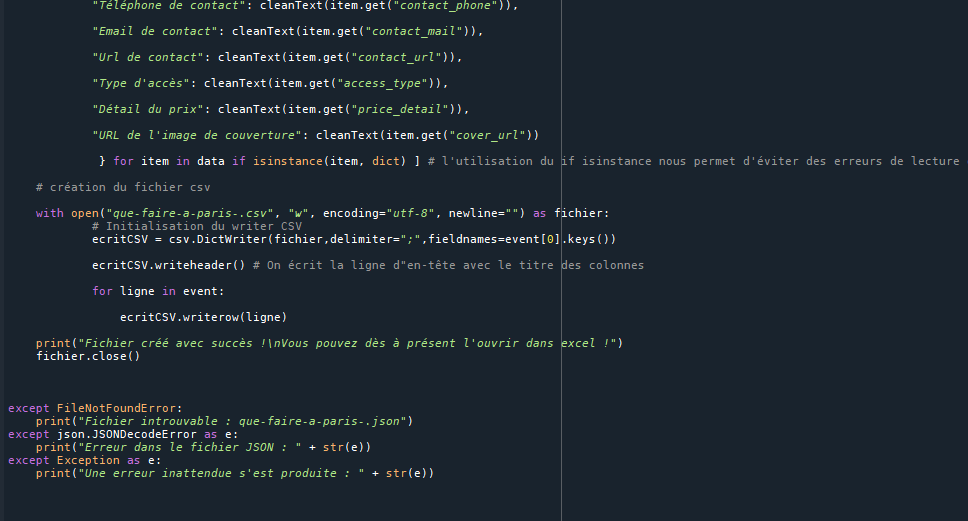
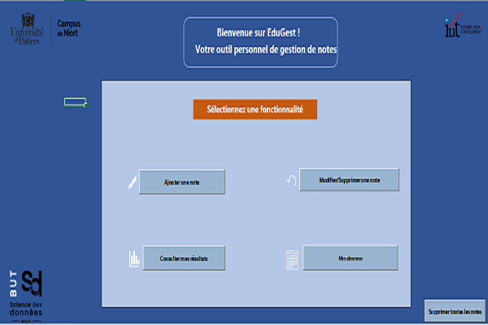

Présentation d’un territoire
Notre premier projet de l’année consistait à présenter une ville ayant accueilli les Jeux Olympiques. En groupe, avec Nathan Puaud et Toni Robert, nous avons choisi Los Angeles en 1984.
Ce travail mêlait recherche documentaire, synthèse d’informations et présentation orale, à la fois en français et en anglais.
Les recherches se sont déroulées sans difficulté majeure. En revanche, la conception du PowerPoint s’est révélée plus exigeante : il a fallu organiser clairement les données tout en gardant un format synthétique. La contrainte la plus complexe a été de réduire et hiérarchiser l’information : choisir les bons mots, les bonnes données et structurer les slides efficacement pour ne pas surcharger.
Sur le plan oral, je me suis senti à l’aise, tant en français qu’en anglais. Ce projet m’a permis de travailler ma capacité à m’exprimer à l’écrit et à l’oral, dans les deux langues. L’organisation au sein du groupe s’est faite naturellement, même si avec du recul, nous aurions pu mieux anticiper le temps de parole lors de l’oral final.
Compétences mobilisées :
– Recherche et tri d’informations fiables
– Structuration et synthèse visuelle (PowerPoint)
– Expression orale en français et en anglais
– Travail en groupe et répartition des tâches
Résultats obtenus :
PowerPoint : 13/20
Oral en français : 14/20
Oral en anglais : 17/20
Ce premier projet m’a permis de développer des compétences de communication et de synthèse, tout en renforçant ma capacité à travailler en équipe dans un contexte bilingue.
Télécharger le support :
📥 Télécharger le PowerPoint du projet (Los Angeles 1984)
Analyse des données INSEE : Haute-Vienne

L’objectif de ce projet était de réaliser un compte rendu d’analyse sur le département de la Haute-Vienne, à partir des données de l’INSEE. Le but : mieux comprendre les spécificités du territoire sur les aspects démographiques et économiques, en particulier autour de l’emploi.
Pour cela, j’ai utilisé Excel pour produire des graphiques et des indicateurs statistiques tels que les moyennes, médianes et écarts-types. Grâce à ces analyses, j’ai pu identifier des tendances fortes sur les communes étudiées. J’ai ensuite rédigé un compte rendu structuré sous Word, présentant les résultats avec clarté et esprit de synthèse.
Le projet s’est déroulé sur plusieurs semaines, avec un rythme qui nous a permis de travailler progressivement, de recevoir des retours réguliers de notre enseignante, et d’améliorer continuellement la qualité du rendu. Cette approche m’a permis de progresser en rédaction et en analyse critique des données.
J’ai particulièrement apprécié ce projet car il combinait à la fois une phase technique et une phase rédactionnelle : comprendre, interpréter, structurer et communiquer les résultats.
Compétences mobilisées :
– Interprétation statistique à partir de données réelles (INSEE)
– Analyse critique et mise en perspective des résultats
– Structuration claire d’un compte rendu
– Adaptation au destinataire : clarté, vocabulaire, pertinence des commentaires
Résultats obtenus :
– Partie technique (Excel) : 18/20
– Partie rédactionnelle (Word) : 17,5/20
Ce projet m’a permis de renforcer ma capacité à exploiter des données statistiques, à formuler une analyse claire et à communiquer efficacement des résultats, avec rigueur et adaptabilité.
Télécharger le compte rendu :
📥 Télécharger le compte rendu complet (Word)
Traitement de données JSON en Python

L'objectif de ce projet était de transformer un fichier JSON contenant les activités à Paris en un fichier CSV, en filtrant et conservant uniquement certaines données pertinentes. Ce projet a été réalisé en binôme durant les heures de cours. J'ai travaillé avec Jérémie Ndjoye pour la première fois, une collaboration qui à été enrichissante.
La principale difficulté rencontrée fut l'organisation du travail à deux sur un même fichier Python. Pour y remédier, nous avons décidé de diviser le programme en deux parties : chacun s’est chargé d’une section du code, que nous avons ensuite réassemblées pour obtenir une version fonctionnelle du script.
Ce projet m’a permis de renforcer ma compréhension de la manipulation de fichiers JSON et CSV en Python, mais aussi de travailler en collaboration tout en respectant les contraintes de structure de données.
Compétences mobilisées :
– Correctement interpréter et prendre en compte le besoin du commanditaire ou du client
– Respecter les formalismes de notation
– Connaître la syntaxe des langages et savoir l’utiliser
– Maîtriser la structure des données à exploiter
– Comprendre les structures algorithmiques de base et leur contexte d’usage
– Prendre conscience de l’intérêt de la programmation
Résultat obtenu :
Note finale : 19/20
Télécharger le script Python :
📥 Télécharger le fichier Python du projet (JSON vers CSV)
Mise en oeuvre d'une enquête

Ce projet a été réalisé en une matinée. L'objectif était de créer une enquête sur la santé des étudiants de l'IUT de Niort. En groupe de trois, nous avons conçu un organigramme structurant le questionnaire, réfléchi aux questions essentielles à poser, puis rédigé le questionnaire directement dans le logiciel Sphinx.
La principale difficulté était le temps très limité, qui exigeait une bonne organisation et une prise de décision rapide sur le contenu de l'enquête. Réaliser un organigramme logique et clair en un temps restreint, tout en veillant à respecter un nombre raisonnable de questions, a été un vrai défi.
Ce projet nous a permis de comprendre les enjeux de la conception d’une enquête, de la démarche de questionnement jusqu'à la mise en forme technique.
Compétences mobilisées :
– S'adapter au niveau d'expertise, à la culture et au statut du destinataire
– Veiller aux aspects éthiques, déontologiques et réglementaires de l'utilisation des données
– Utiliser une forme de restitution adaptée (questionnaire sous Sphinx)
Résultat obtenu :
Note finale : 15,5/20
Création d'un reporting

Ce projet a été réalisé lors d'une semaine bloquée en binôme. L’objectif était de développer un outil permettant de saisir les notes de chaque matière, puis de générer un tableau de bord avec des graphiques de suivi du semestre. Le but était d’évaluer si l’étudiant est admissible l’année suivante.
Le projet s’est divisé en deux parties : une partie Excel pour la conception du tableau de bord, et une autre en VBA pour automatiser la saisie et les traitements. Je me suis plus occupé de la partie VBA, tandis que mon binôme Jérémie Ndjoye c'est plus occupé de la partie Excel.
La principale difficulté a été de travailler avec VBA pour la première fois. Il fallait comprendre ce qui était possible de faire avec ce langage et apprendre à le manipuler efficacement en peu de temps. Malgré cela, nous avons réussi à bien nous organiser et à produire un outil fonctionnel et clair.
Compétences mobilisées :
– Entrer correctement les demandes métier dans les programmes, en respectant le cahier des charges
– Structurer et documenter correctement un programme
– Appliquer les bonnes pratiques de développement
Résultat obtenu :
Note finale : 19/20
Télécharger le fichier Excel/VBA :
📥 Télécharger l'outil de reporting (.xlsm)